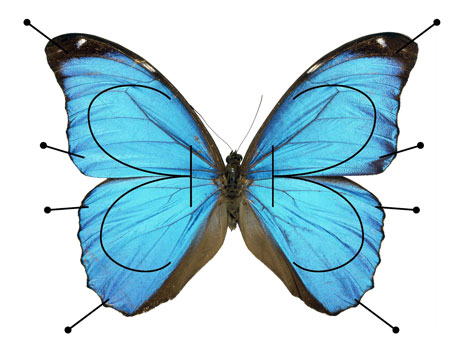

| Hinagiku Katsura |
The sea advaces insensibly in silence,
nothing seems to happen, nothing moves, the water is so far off you hardly hear it... yet finally it surrounds the resistant substance. |
| Mathematics Thoughts | |
| I study representation theory. I am especially interested in its intesection with mathematical phiysics | I am intersted in religious books although I am never tempted to commit myself to any particular religion. |
| The link above includes some notes and drafts. | I record some thoughts that I find really impotant for my life. |
|  | |
| A representation of Grothendieck's vision of a pinned reductive group.(The picture is copied from James Milne's homepage.) | This is a part of the manuscripts of Odyssey in 15th century.(The picture is from Wiki.) |